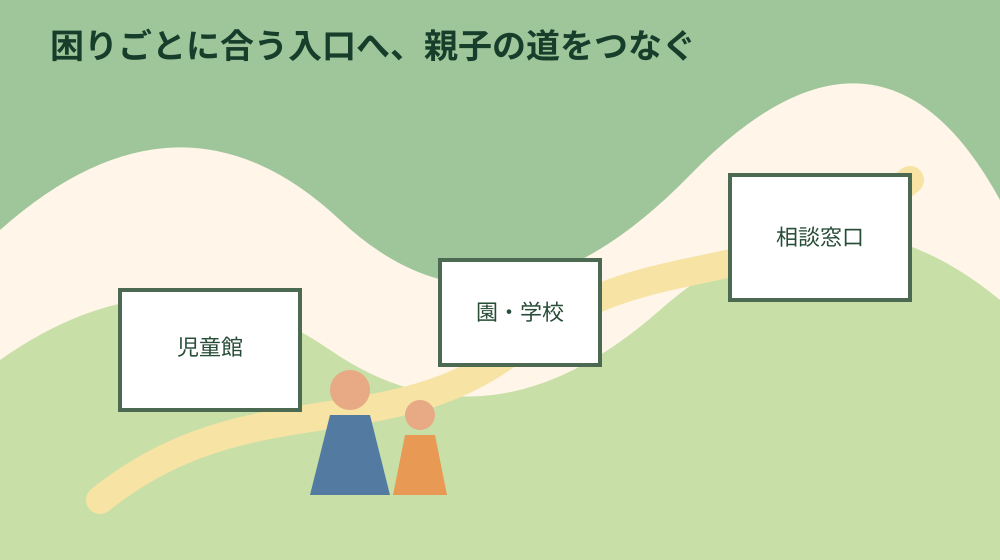
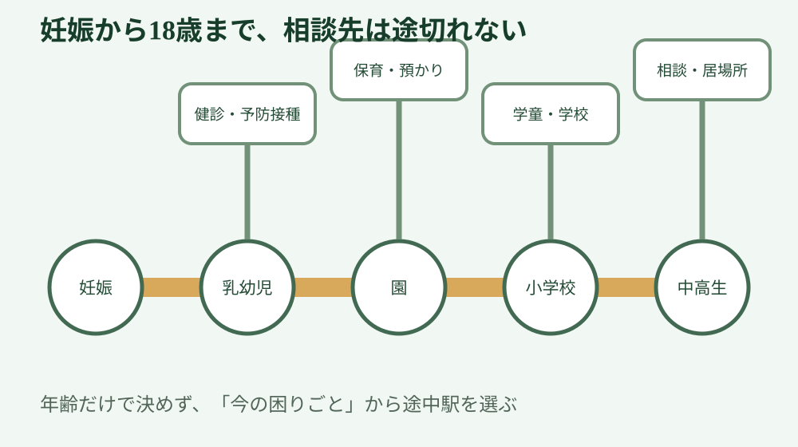
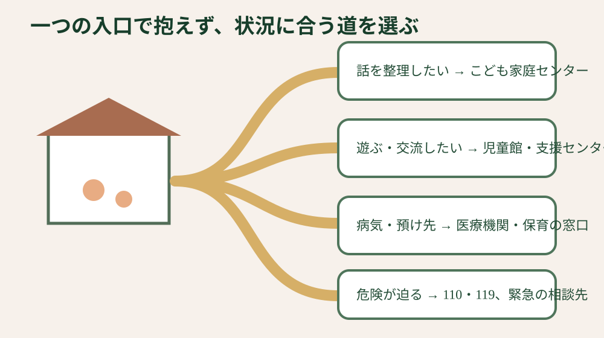

静岡県周智郡森町・子育て支援
森町子育て支援完全ガイド｜年齢別に制度を整理
森町の子育て情報は、妊娠、健診、保育、学校、手当、相談など複数の窓口に分かれます。このページは制度名を並べるのではなく、子どもの年齢と「今日いちばん困っていること」から、次に見る正規ページと相談先を選ぶ親ハブです。
結論：制度を全部覚えず、年齢と困りごとを一文にする
最初の相談先が分からないときは、森町こども家庭センターが入口になります。森町公式では、妊産婦、子ども、子育て家庭を一体的に支える相談機関として案内され、健康こども課こども家庭係内に置かれています。相談内容を制度名へ言い換えられなくても、「3歳の子がいる。最近眠れず、預け先も分からない」のように現状を一文で伝えれば、必要な担当へつないでもらう出発点になります。
遊ぶ場所や親子交流を探すなら、森町児童館・森町子育て支援センターを確認します。児童館は0歳から18歳未満の子どもが利用でき、幼い子どもは保護者と一緒に使います。行事、開館時間、休館日は変わる可能性があるため、出かける日の公式案内を見ることが大切です。
予防接種や健診の日程管理、施設検索には、もりまち子育て応援アプリという選択肢があります。ただし、アプリは医師や相談員の代わりではありません。発熱、呼吸、意識、けがなど医療判断が必要なときは、記録を眺め続けず、かかりつけ医、救急相談、119を状況に応じて選びます。
支援は「申請すれば全員が同じ内容を受けられる一覧」ではありません。年齢、住民登録、加入保険、所得、就労、園の利用、申請時期などで条件が変わります。金額や定員だけを切り取らず、制度の目的、対象、必要書類、期限、問い合わせ先を一組として確認してください。
2026年度には、森町でこども誰でも通園制度が始まっています。就労要件を問わず、保育所等に通っていない生後6か月から満3歳未満の子どもが対象となる制度で、町公式は月10時間まで、森町の実施施設では1時間300円と案内しています。利用条件や実施施設、給食等の実費、キャンセルの扱いまで公式ページで確認してから申し込みます。

妊娠から18歳まで、年齢別に見る確認の順番
妊娠が分かったら、医療機関で妊娠届出書を受け取り、森町健康こども課こども家庭係で母子健康手帳の交付を受けます。2026年4月更新の町公式ページでは、森町に住民登録のある妊婦を対象に、平日の午前8時30分から午後4時30分まで交付し、面談等を含む所要時間は40〜50分程度と案内しています。予約や持ち物は来庁前に最新情報を確かめます。
2025年4月からは、妊婦のための支援給付と妊婦等包括相談支援事業を一体的に実施しています。森町では妊娠時と出産後の二回に分けて給付し、妊娠届出時の面談、妊娠後期のアンケートなどを通じて相談につなげます。給付だけを目的に急いで入力するのではなく、体調、仕事、家族の支援、出産後の見通しも面談で共有します。
赤ちゃんが生まれたら、出生届、健康保険、こども医療費受給者証、児童手当、新生児出生通知などを分けて進めます。森町公式は、こども医療費について保険診療の自己負担分を助成し、出生時は養育者の健康保険情報が分かるものを持参するよう案内しています。健康保険の登録が整う時期と町の申請期限が同じとは限らないので、先に窓口へ相談します。
乳児期には、産婦健診、新生児聴覚検査、こんにちは赤ちゃん訪問、乳幼児健診、予防接種が続きます。母子健康手帳、予診票、受診票、案内通知を一つの袋にまとめると、家族が代理で準備するときも経過が見えます。体重や発達を他の子と単純比較せず、気になる変化は健診を待たず保健師や医療機関へ相談します。
未就学期は、保育園、幼稚園、一時預かり、病児・病後児保育、ファミリー・サポート・センター、誰でも通園制度など選択肢が増えます。名前が似ていても、利用理由、対象年齢、事前登録、予約先、利用時間、料金が違います。「毎日通う場所」「急用時」「病気の回復期」「短時間の体験」を分けると、必要な制度が見つけやすくなります。
小学生になると、通学区域、転校、給食、放課後児童クラブ、学校相談が中心になります。2026年度の放課後児童クラブは年度の募集要項が公開されており、土曜日の実施場所など年度固有の情報があります。前年の案内をそのまま使わず、利用年度の資料と就労証明等の必要書類を確認します。
中高生では、学校生活、進路、こころ、家族関係、不登校など、本人の意思とプライバシーを尊重した相談が必要です。親が先に結論を決め、本人に無断で情報を広げると相談が遠のくことがあります。危険が差し迫る場合を除き、誰に何を伝えるかを本人と相談し、学校やこども家庭センターを入口にします。

相談、預け先、健康、家計を困りごと別に選ぶ
育児の不安、家族関係、子どもの行動、学校へ行きづらい状況など、何から話せばよいか分からないときは、こども家庭センターへ相談します。相談前に立派な記録を作る必要はありません。「いつから」「どんな場面で」「家族が何に困っているか」の三点をメモすれば十分です。
親子で過ごせる場所、同年代との交流、子育て情報を探すなら、児童館・子育て支援センターが候補です。初回は滞在時間を短めにし、子どもの反応を見てもかまいません。行事へ参加しない日でも利用できるか、年齢ごとの時間設定があるか、飲食や持ち物の決まりを公式案内や電話で確認します。
仕事、出産、病気、介護、冠婚葬祭などで一時的に保育が必要なら、一時預かりを確認します。森町公式は摩耶保育園での一時預かりを案内し、直接申込みや申込期限、保育時間、年齢別料金を掲載しています。空きや受入体制は日ごとに変わるため、「制度がある」ことと「希望日に使える」ことを分けて考えます。
病気の治療中や回復期で集団生活が難しく、家庭で保育できない場合は病児・病後児保育が候補になります。対象年齢、病状の安定、食事や水分が取れることなど条件があり、医療機関の診断や連絡票、予約が関係します。発症してから初めて制度名を知ると動きにくいため、元気な日に登録方法と持ち物を確認しておきます。
送迎や短時間の預かりを地域の助け合いで補う仕組みとして、ふくろいファミリー・サポート・センターの案内があります。援助を受ける側と行う側が会員となる制度で、保育施設や習い事の送迎にも使える場合があります。料金、活動時間、事前打合せ、補償を確認し、初対面の個人へ直接依頼する仕組みと混同しないでください。
健康面では、予防接種、健診、歯科、発達相談、通常受診、夜間休日、救急を分けます。定期的な予防と、今起きている症状の判断は別です。意識がおかしい、呼吸が苦しそう、けいれんが続く、大きな事故など緊急性が高いときは、アプリや通常相談の返事を待たず119を選びます。
家計の不安では、児童手当、こども医療費、ひとり親支援、就学援助、妊婦のための支援給付など、対象と申請先が異なります。一覧の金額だけを足して生活費を見積もらず、いつ申請し、いつ支給され、自己負担が何に残るかを確認します。申請が遅れると遡れない制度もあるため、出生や転入の直後は早めに窓口へ相談します。
森町で暮らすなら、制度と一日の移動を重ねる
森町は、森、一宮、飯田、園田、天方、三倉など、地区によって駅、バス、園、学校、買い物、医療機関までの移動条件が違います。町内に制度があることと、自宅から無理なく利用できることは同じではありません。平日朝、夕方、雨の日に、送迎や通院の経路を実際に確かめます。
保育園や幼稚園を選ぶときは、開園時間や教育内容だけでなく、職場までの逆方向移動、きょうだいの学校、踏切、狭い道路、駐車場、発熱時のお迎えまで重ねます。見学の日は空いていても、毎朝同じ時間に動くと負担が違うため、通勤時刻に一度走ってみる価値があります。
小学校の通学区域は住所で確認します。不動産広告の「○○学校区」という表示だけで確定せず、番地を教育委員会へ伝えます。通学路は距離だけでなく、歩道、横断、見通し、水路、暗さ、雨天、災害時の避難方向を親子で歩いて確認します。
放課後の居場所は、児童クラブ、家、祖父母宅、習い事などを一週間の表にします。親の勤務終了時刻と公共交通、迎えに行けない日の連絡先、長期休業中の昼食も確認します。利用申込みが必要な場所は、住宅契約や転校手続きより締切が早い場合があります。
医療は、通常の診療所、公立森町病院、町外の専門医療、夜間休日の受診先を役割で分けます。車が使えない日、きょうだいを連れていく日、保護者自身が体調不良の日を想定し、頼める人や交通手段を二つ用意します。
山間部や郊外では、携帯電話の電波、固定回線、停電時の連絡手段も子育ての基盤です。通信会社の地図だけでなく、家の中、学校への道、避難先で端末を確認します。母子手帳、薬、保険情報、緊急連絡先は、停電や通信障害でも見られる紙の控えも残します。
移住前に子育て支援の数を比較するときは、給付額だけで順位をつけない方が実態に近づきます。困った日に相談できるか、送迎が続けられるか、家族が休めるか、子どもが居場所を持てるかを、一日の時間割に置き直してください。
病気、発達、虐待、DVでは安全を最優先にする
子どもの発達が気になるとき、インターネットのチェック表だけで診断名を決めないでください。気になった場面、頻度、園や学校での様子、睡眠や食事をメモし、こども家庭センター、健診、医療機関、園・学校などから相談しやすい入口を選びます。
親の疲れが強く、怒鳴る、手が出そう、子どもと離れたいと感じたときは、良い親か悪い親かを判定する前に、安全な距離と相談先を確保します。一時預かりや家族の協力がすぐ使えなくても、こども家庭センターへ現在の状況をそのまま伝えてください。
虐待が疑われる、子どもの安全が今まさに脅かされている場合は、通常の問い合わせフォームだけに送って返事を待つ状況ではありません。緊急時は110や119、児童相談所虐待対応ダイヤル189など、状況に合う緊急の連絡先を使います。通報するか迷う段階でも相談できます。
配偶者や家族からの暴力、監視、経済的な拘束がある場合は、相談履歴や閲覧履歴が相手に見られる危険を考えます。安全な端末、信頼できる場所、緊急避難を優先し、子どもの学校や住所を公開の問い合わせ欄へ詳しく書かないでください。
夜間や休日の急病では、年齢、症状、発症時刻、飲食、服薬、持病、意識と呼吸をメモします。森町の子どもの救急ガイドでは、#8000などの相談先と受診判断の入口を整理しています。ただし、明らかな緊急症状は相談番号を経由せず119です。
子どもや家庭の情報は、支援を受けるために必要な範囲で共有します。アクセス解析や一般の連絡フォームへ、氏名、病歴、学校名、詳細な家庭状況を不用意に送らないようにします。誰が情報を見るか、どこに記録されるかが不明なら、電話や窓口で確認します。

家族に残す子育て記録と、大石の視点
家族で共有する記録には、子どもの氏名と生年月日、健康保険、かかりつけ医、アレルギー、服薬、園・学校、緊急連絡先、迎えに行ける人をまとめます。全情報をスマートフォン一台だけへ入れず、必要最小限の紙の控えを安全な場所に残します。
制度の記録は、制度名、申請日、担当窓口、提出した書類、次の期限に分けます。「申請したはず」という記憶ではなく、受付控えや通知を一か所に保管します。金額や対象期間が変わったときは、古い画面のスクリーンショットだけを根拠にせず公式ページを再確認します。
園や学校の記録では、担任名だけでなく、欠席連絡の方法、災害時の引渡し、給食の相談、放課後の連絡先を残します。保護者の勤務先が変わった、祖父母が迎えに行けなくなったなど、家庭側の条件が変わったときも更新します。
住まいの記録には、通学路、道路、水路、駐車場所、避難先、停電時の連絡、近隣に頼れる人を含めます。子育ての困りごとは家の広さだけで決まらず、移動と周辺環境に左右されます。物件を見る日は、室内だけでなく朝夕の道を確認します。
私は、小さな不動産業者として、子育て世帯へ「支援が多いからこの家が正解」とは言えないと考えます。制度が使えても、送迎が毎日一時間増えれば負担になります。反対に、給付が目立たなくても、相談先と家族の助けが近ければ続けやすい暮らしがあります。
住まいを選ぶ前には、道路、境界、災害リスク、上下水道、農地、登記といった不動産上の条件と、園、学校、病院、買い物への動線を別々に確認します。その上で一日の時間割に重ねると、価格や広さだけでは見えない判断材料が残ります。
親の実家へ戻って子育てする場合も、同居、近居、改修、賃貸、売却を急いで一つに決める必要はありません。名義、修繕、生活費、親の介護、子どもの通学を紙に分け、家族の合意を少しずつ作ります。売ると決めていない段階でも、実家の情報を整理することには意味があります。
よくある質問
何を相談したいか自分でも分かりません
こども家庭センターへ「子どもの年齢」と「最近いちばん困った場面」を伝えてください。制度名を決めてから相談する必要はありません。健康こども課こども家庭係の公式電話番号は0538-86-6330です。
児童館と子育て支援センターは、相談がなくても使えますか
親子の遊びや交流の入口として利用できます。年齢、開館時間、休館日、行事の予約は出かける日の森町公式案内で確認してください。
仕事をしていなくても短時間の保育を使えますか
2026年度に始まったこども誰でも通園制度は、保護者の就労要件を問わない制度です。対象年齢、他の保育施設に通っていないこと、月の利用上限、実施施設などの条件があるため公式ページで確認します。
子どもが熱を出した日に預けられる場所はありますか
病児・病後児保育がありますが、病状、年齢、定員、事前登録、医療機関の書類など条件があります。必ず預けられるとは限らないため、元気な日に利用方法を確認してください。
発達が気になります。すぐ診断を受けるべきですか
記事だけで診断の要否は判断できません。気になる場面を記録し、こども家庭センター、健診、かかりつけ医、園・学校など相談しやすい入口へ伝えてください。
公式情報源と次に読むページ
制度は2026年8月9日に確認しました。年度で変わる料金、対象、定員、行事、申込期間は利用直前に再確認してください。
詳しい手続きは、妊娠届と母子健康手帳、出生後の手続き、保育園・幼稚園、放課後児童クラブ、小学校の通学区域、子どもの救急へ進んでください。